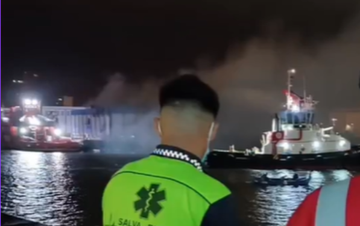
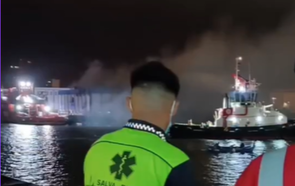

ES
ES
 EN
EN
 DE
DE
 FR
FR
 NO
NO
 IS
IS
Salva-Emer in Aktion
Erfahrungsberichte und herausragende Projekte mit Bildern und Videos unserer erfolgreichen Einsätze.
Notfall am Vulkan La Palma
Veranstalter: RedCOE | Dauer: 4 Monate | Team: 16 Fachkräfte
Salva-Emer spielte während der Vulkan-Krise eine Schlüsselrolle und bot Sicherheit sowie humanitäre Unterstützung.
Phase 1
- Perimetersicherung in Risikogebieten
- Evakuierung von Bevölkerung
- Verteilung von Hilfsgütern
Phase 2
- Transport und Unterstützung für Familien
- Sicherer Zugang zur Rückgewinnung von Eigentum
- Tierrettung


Waldbrände auf Teneriffa und Gran Canaria
Veranstalter: Regierung der Kanarischen Inseln
- Geländeinspektion
- Evakuierung der Bevölkerung
- Unterstützung bei der Tierrettung und Zusammenarbeit mit Feuerwehr
 

DANA in der Region Valencia
Veranstalter: Regierung von Valencia | Dauer: 15 Tage | Team: 4 Retter
- Entfernung von Trümmern
- Verteilung von Hilfsgütern
- Koordination mit Freiwilligen